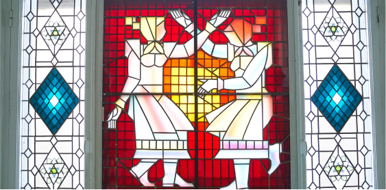
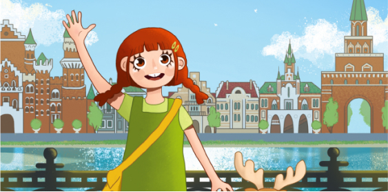

<section class="useful-links page__section">
    <div class="page__wrap">
        <h2 class="page__subtitle">Абонементы</h2>
        <ul class="useful-links__list">
            <li class="useful-links__item">
                <a class="useful-links__link" href="./price.html">
                    <div class="img">
                        <picture>
                            <source type="image/webp" srcset="
            ../useful-links/special-offer-767@1x.webp 1x,
            ../useful-links/special-offer-767@2x.webp 2x,
            ../useful-links/special-offer-767@3x.webp 3x">
                            <source type="image/jpeg" srcset="
            ../useful-links/special-offer-767@1x.jpg 1x,
            ../useful-links/special-offer-767@2x.jpg 2x,
            ../useful-links/special-offer-767@3x.jpg 3x">
                            
                        </picture>
                    </div>

                    <h3 class="useful-links__title">
                        <span>Акции</span>
                        <svg class="icon" width="20px" height="20px" fill="none">
                            <use class="icon__symbol" xlink:href="#icon-arrow-up-right"></use>
                        </svg>
                    </h3>
                </a>

            </li>
            <li class="useful-links__item">
                <a class="useful-links__link" href="#">
                    <div class="img">
                        <picture>
                            <source type="image/webp" srcset="
            ../useful-links/cultural-diary-767@1x.webp 1x,
            ../useful-links/cultural-diary-767@2x.webp 2x,
            ../useful-links/cultural-diary-767@3x.webp 3x">
                            <source type="image/jpeg" srcset="
            ../useful-links/cultural-diary-767@1x.jpg 1x,
            ../useful-links/cultural-diary-767@2x.jpg 2x,
            ../useful-links/cultural-diary-767@3x.jpg 3x">
                            
                        </picture>
                    </div>

                    <h3 class="useful-links__title">
                        <span>Культурный дневник школьника</span>

                        <svg class="icon" width="20px" height="20px" fill="none">
                            <use class="icon__symbol" xlink:href="#icon-arrow-up-right"></use>
                        </svg>
                    </h3>
                </a>

            </li>
        </ul>
    </div>
</section>